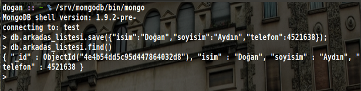
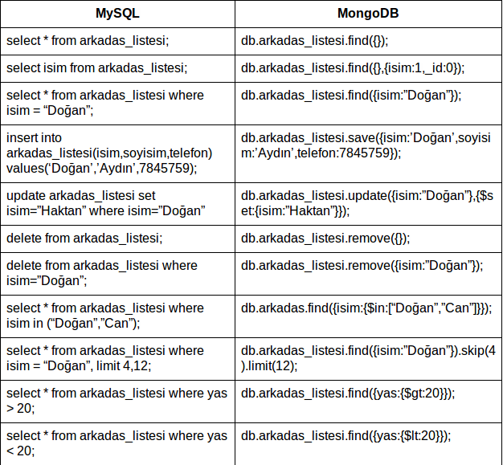

MongoDB, ölçeklenebilir, yüksek performanslı, alışık olduğumuz veri tabanlarında kullanılan şemalar yerine doküman odaklı bir veri tabanıdır. C++ ile yazılmıştır. Bazı özelliklerini sıralamamız gerekirse:
- Doküman odaklı.
- İndexleme.
- Replikasyon ve yüksek kullanılabilirlik.
- Otomatik bölümleme.
- Sorgulama.
- Map/reduce
- GridFS
Geleneksel Veri Tabanları Ve MongoDB
Geleneksel veri tabanları dediğimiz şey aslında sql kullanan veri tabanlarıdır. Sorgulama dili olarak sql kullanırlar ve bazı yerlerde bizi kullanmaya zorladıkları şema yapıları nedeniyle çok kısıtlayıcılardır. Blog, forum, içerik yönetim sistemleri gibi uygulamalarda bu kısıtlamalar çok önemli olmasa da bizi kendilerine uymak zorunda bırakırlar. Tek zorlukları da şemaları değildir. Eğer büyük ölçekli bir proje geliştiriyorsanız ölçeklenmesi, replikasyonu ve bölümlemesi epey zordur.
Ama gelişen teknoloji bize bu konuda alternatifler sunmaya devam ediyor. Son zamanlarda adları çok sık duyulmaya başlayan bu yeni nesil veri tabanlarının genel adları NoSQL veri tabanlarıdır. NoSQL veri tabanları adlarından da anlaşılacağı gibi sql dilini kullanmazlar. Her birinin kendine göre sorgulama yöntemleri vardır.
MongoDB bu veri tabanları arasında önde gelenlerdendir. Json benzeri bir veri saklama yöntemi kullanır. Replikasyon ve bölümleme işlemleri bir komut kadar kolaydır. Yazının ilerleyen bölümlerinde de geleneksel veri tabanları denildiğinde mysql,postgresql,sqlite gibi veri tabanları gelsin.
Doküman Odaklı
MySQL ve diğer geleneksel veri tabanlarında kullanılan kısıtlayıcı şemalar yerine JSON benzeri bir doküman stilini kullanır. Bu sayede bizi kısıtlamaz ve veri tabanımızın daha hızlı ve daha ölçeklenebilir olmasını sağlar.
MongoDB’de veri tabanları doküman, tablolar da koleksiyon olarak geçer. Örnek olarak isim, soyisim, telefon bilgilerini tutan bir mysql tablosu ve mongodb koleksiyonunu kullanan bir uygulama yapalım. Hazırladığım mysql tablosu:

MongoDB koleksiyonu oluşturmak için bir komut yoktur. Siz olmayan bir koleksiyonu veri eklerseniz o koleksiyon veri ekleme anında oluşturulur. Yukarıdaki aynı şemayı oluşturmak için arkadas_listesi isimli koleksiyonu ilk veriyi eklemeniz yeterlidir.

Gördüğünüz gibi verilerimiz eklediğimiz zaman koleksiyon veya mysql ismiyle tablomuz oluştu. Hatta eklemediğimiz halde _id alanı eklendi. Bu alan varsayılan olarak tüm koleksiyonlara eklenir ve tektir (unique). MongoDB de yazdığım kod çoğu programcıya tanıdık gelmiştir. Çünkü yazının başından beri dediğim gibi mongodb json benzeri bir yapı kullanır. Tam olarak adı BSON(Binary JSON)’dur.
İndexleme
Geleneksel veri tabanlarından çok farklı mongodb’de geleneksel veri tabanlarında olduğu gibi indexleme özelliğini kullanabilirsiniz. MongoDB de yeni olan ise “Geospatial Indexing” dir. Bu özellik sayesinde yer yüzü koordinatları gibi 2 boyutlu verilerin tutulduğu alanları indexleyebiliriz.

Replikasyon Ve Yüksek Kullanılabilirlik
Replikasyon özelliği sayesinde veri tabanımızın kopyalarını ağ üzerinden erişilebilir duruma getirebiliriz. Üstelik bu özelliği diğer veri tabanlarından çok daha kolay uygulayabiliriz. Mongodb tek komut ile replikasyon oluşturmanıza yardımcı olur.
Replikasyon için iki tane server gereklidir. Deneme amaçlı olarak sanal sunucu kurabilirsiniz. Master yani ana sunucumuz için mongodb yi fazladan bir parametre ile çalıştırmak yeterlidir. Aynı şekilde slave yani köle veya ikincil sunucuları eklemekte aynı şekilde tek parametre ile yapılabilir.
Master Sunucu: /srv/mongodb/bin/mongodb --dbpath /srv/data --master
Slave Sunucu: /srv/mongodb/bin/mongodb --dbpath /srv/data --slave source localhost:27017
Otomatik Bölümleme
Eğer elimizdeki veriler çok fazlaysa bunları saklamak için tek bir sunucu yetmeyecektir. Yapılması gereken sunucuya yeni hard disk eklemek veya yeni ve büyük kapasiteli bir sunucu almaktır. Veya çok daha ucuz olan veri tabanlarının bize sağladığı bir yöntemi kullanmaktır. Bölümleme özelliği olan veri tabanlarında ağımıza küçük ve ucuz bilgisayarlar ekleyerek verilerimizi bunlara paylaştırabiliriz. MongoDB’nin bize sağladığı avantaj ise bu işlemi bir kaç satır komutla çok kolay halledebilmemizdir. Bu konu hakkında detaylı bir video vermek istiyorum.
http://www.youtube.com/watch?feature=player_embedded&v=IK80yYujO1A
Sorgulama
MongoDB de sorgulama işlemleri geleneksel veri tabanlarında kullanılar sql dili yerine json kullanılarak yapılır. Bazı sql komutlarını mongodb de kullanmak için çevirirsek:

Map/Reduce
Map/reduce işlemi çok çok büyük verileri kolaylıkla işlemek için geliştirilmiş bir yöntemdir. Günümüzde neredeyse bütün büyük şirketler tarafından kullanılmakta ve geliştirilmektedir. Sql tarafından bakacak olursak group komutu gibi çalışır. Diyelim ki elimizde bu şekilde bir kayıtlardan oluşan bir koleksiyon olsun.
{
isim: "Ahmet",
begeni: 20,
text: "Merhaba MongoDB!"
}
Bu veriler üzerinde basit bir map/reduce işlemi uygulayalım:
Map fonksiyonumuz:
m = function() {
emit( this.isim, {toplam: 1, begeni: this.begeni} );
}
Reduce fonksiyonumuz:
r = function(key, values) {
var result = {toplam: 0, begeni: 0};
values.forEach(function(value) {
result.toplam += value.toplam;
result.begeni += value.begeni;
});
return result;
}
Map/Reduce işlemi:
res = db.yorum.mapReduce(m,r,{query:{isim:”Ahmet”},out:"ciktimiz"});
Map/Reduce işlemini uyguladıktan sonra res adında map/reduce işleminin kayıtlarını tutan bir geçici koleksiyon oluşur. Bu koleksiyon üzerinde sorgulama işlemlerimizi yapabiliriz:
res.find({});
{ "_id" : "Ahmet", "value" : { "toplam" : 2, "begeni" : 64 } }
Yukarıda görüldüği gibi Ahmet isimli kullanıcının toplam 2 yorumundan 64 begenisi varmış.
GridFS
MongoDB gridfs ile birlikte bize dağıtık bir dosya sistemi sunar. GridFS ile birlikte büyük/küçük dosyaları tek bir bilgisayarda tutmak yerine bunları küçük parçalara böler. Eğer veri tabanı bölümlemesi yapmışsak bu küçük parçaları tüm veri tabanı sunucularımıza dağıtır. Bölümleme yapmamışsak sadece kendi sunucusunda küçük parçalar halinde saklar. Diyelim ki elimizde 10gb ve 20gb arası boyutlarda video dosyalarımız var ve bu dosyalarda arama yapmamız lazım. En başta bu aramayı gerçekleştirebilmek için tüm dosyanın belleğe yüklenmesi lazım. Yani en az 10gb belleğimiz olmalı. GridFS dosyaları küçük parçalar halinde sakladığı gibi sorgulamayı da bu küçük parçalar üzerinde yapar ve bu küçük parçaların en büyüğü 4mb ile sınırlıdır. Ayrıca GridFS işletim sisteminin sınırlamalarından bağımsız çalışır. Mesela bir dizinde işletim sisteminin normalde izin vermediği kadar dosya saklayabilirsiniz ve işletim sisteminin izin vermediği (uzunluk veya kullanılan karakterler) isimleri verebilirsiniz. GridFS eklenen her dosya hakkında bazı bilgiler tutar. Bunlardan bazıları id,dosya ismi,yükleme tarihi ve md5 bilgileridir.
Notlar
Bilgi almak istediğiniz her konuda dogan1aydin@gmail.com adresinden ve ubuntu-tr forumlarından bana ulaşabilirsiniz. Bu yazıda kullandığım MongoDB sürümü 1.9.2-pre dir. Daha eski veya daha yeni sürümlerde kullandığım fonksiyonlar değişmiş ve çalışmıyor olabilir. MongoDB GNU AGPL v3.0 ile lisanslanmıştır. mongodb.org tarafından desteklenen sürücüler yani kütüphaneler ise Apache License v2.0 ile lisanslanmıştır.
Kaynak
MongoDB : http://www.mongodb.org/